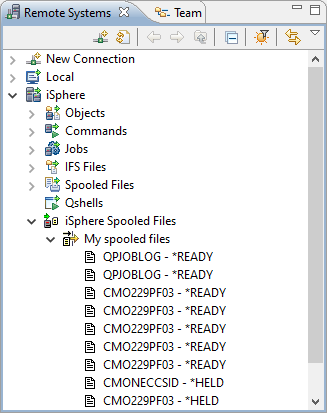
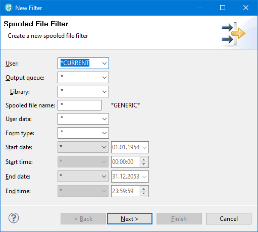
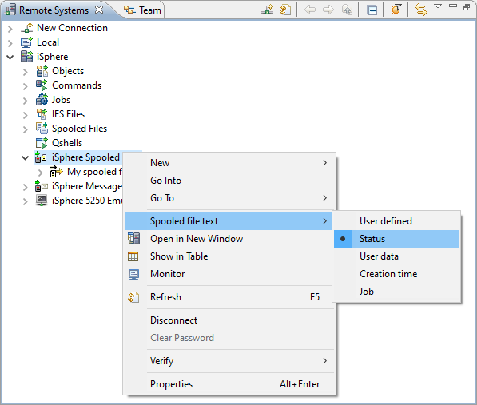

Use the iSphere Spooled File Subsystem to view and manage the spooled files on an IBM i server:
The iSphere Spooled File Subsystem integrates into the Remote Systems Explorer as shown below.
Double click on a spool file to open it. (See Preferences to set either Text, HMTL or PDF as the default format.)

Use the iSphere Spooled Files context menu (right click) to create spooled file filters.

The available filter options are:
| User | - | Specifies the name of the user profile that created the spooled file. | ||||||||||||||||||
| Output queue | - | Specifies the name of the output queue that contains the spooled file. | ||||||||||||||||||
| Library | - | Specifies the name of the library that contains the output queue. | ||||||||||||||||||
| Spooled file name | - | Specifies the the name of the spooled file. The name can be generic. | ||||||||||||||||||
| User data | - | Specifies the user data of the spooled file. | ||||||||||||||||||
| Form type | - | Specifies the form type of the spooled file. | ||||||||||||||||||
| Start date | - | Specifies the starting date of the spooled file. Only spooled files with
a starting date and time equal or later the specified date and time are
displayed. Special values are:
|
||||||||||||||||||
| Start time | - | Specifies the starting time of the spooled file. Only spooled files with
a starting date and time equal or later the specified date and time are
displayed. Special values are:
|
||||||||||||||||||
| End date | - | Specifies the closing date of the spooled file. Only spooled files with
an closing date and time equal or before the specified date and time are
displayed.
|
||||||||||||||||||
| End time | - | Specifies the closing time of the spooled file. Only spooled files with
an closing date and time equal or before the specified date and time are
displayed.
|
Use the context menu (right click) of a spooled file to perform actions on it:
The Open as... and Save as... menu options let you select the format in which to open or save the spooled file:

You can change the text that is displayed next to the name of the spooled from from the context menu of the iSphere Spooled File Subsystem. The layout of the User defined option is specified on the General tab at the iSphere Spooled Files preferences page.
